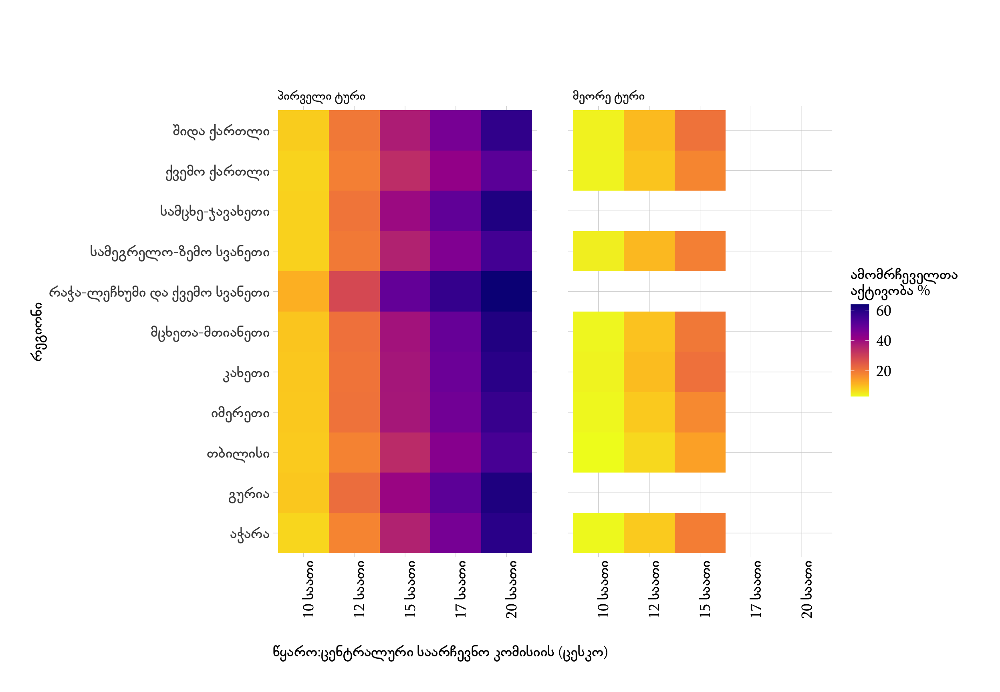

ცენტრალური საარჩევნო კომისიის 2020 წლის საქართველოს პარლამენტის არჩევნების ამომრჩეველთა აქტივობის შესახებ გამოქვეყნებული ინფორმაცია.
 დიაგრამა 1. ამომრჩეველთა აქტივობა რეგიონების მიხედვით
2020 წლის საქართველოს პარლამენტის არჩევნების ამომრჩეველთა რაოდენობა - 1970540
2020 წლის საქართველოს პარლამენტის არჩევნების ამომრჩეველთა აქტივობა 56.11 %